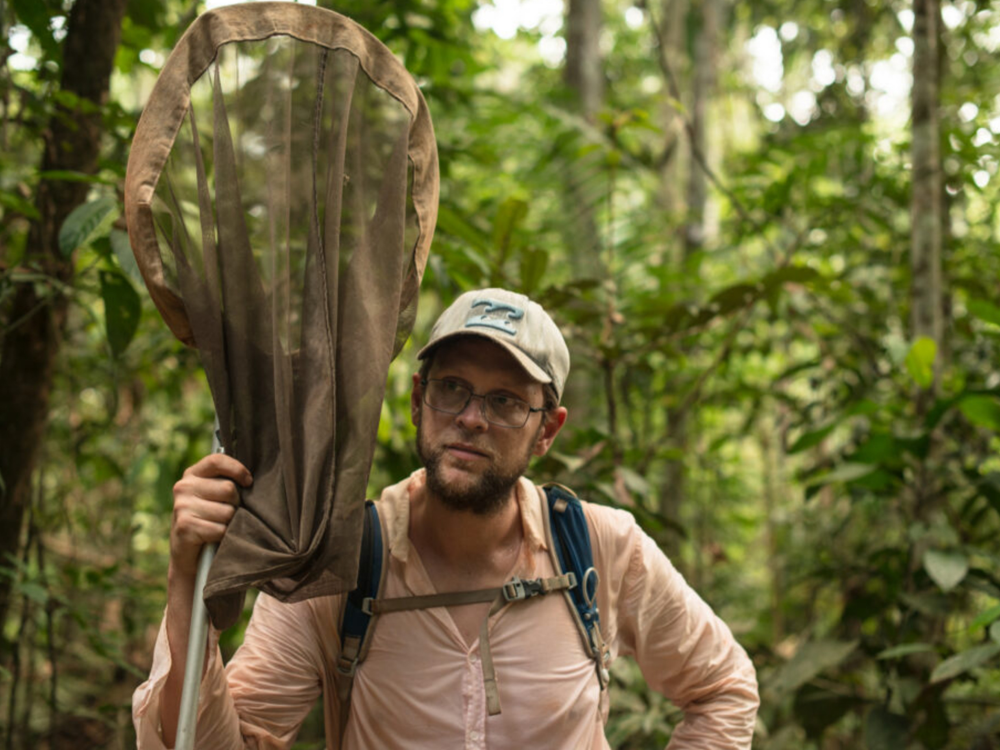
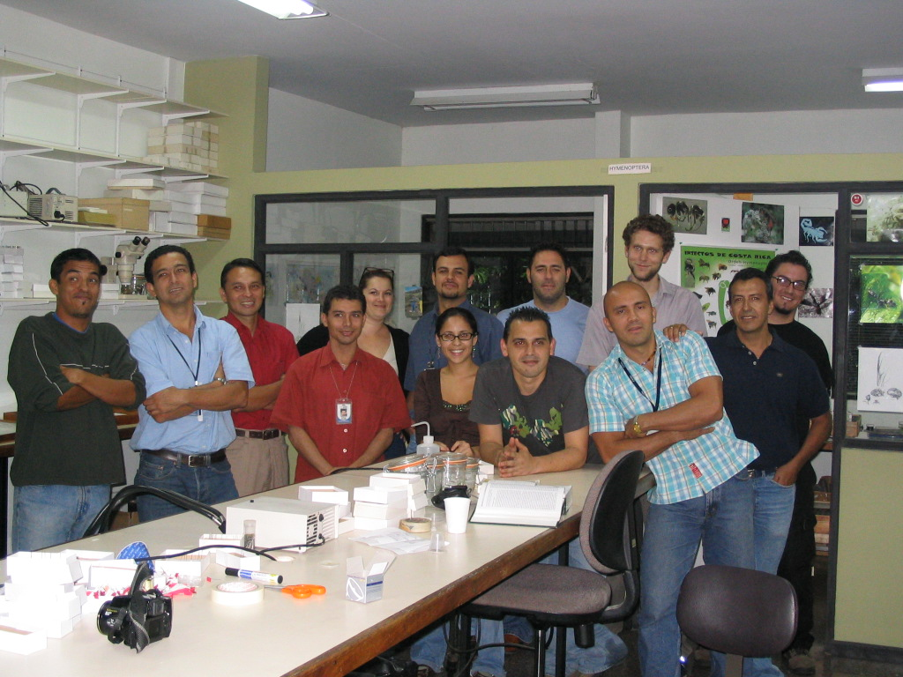
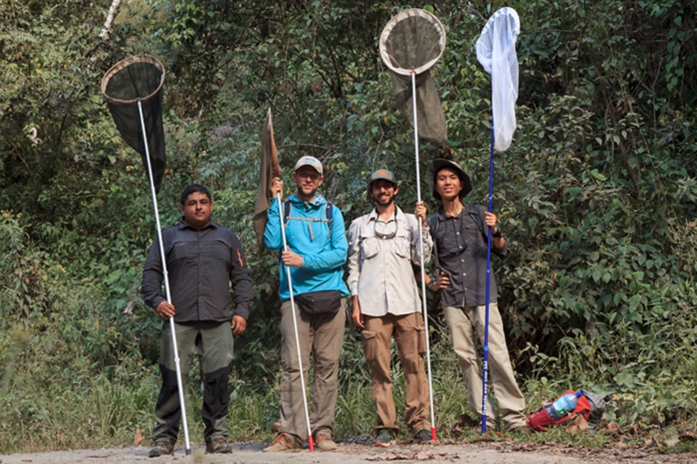

People
Dr. Neil Rosser
Assistant Professor, University of Miami
Associate of Entomology, MCZ, Harvard University
I did my undergraduate degree in Ecology at the University of East Anglia, with a year at the Université de la Méditerranée, in Marseille.
I then worked at the Instituto Nacional de Biodiversidad in Costa Rica, which led me to pursue research in neotropical biodiversity.
I did my Masters in Taxonomy and Biodiversity at Imperial College and the Natural History Museum in London, and I did my PhD at University College London with Jim Mallet.

Field work in the Brazilian Amazon

The Entomology collections, INBio, Costa Rica.

Field work in Bolivia, 2017.
Field work in Bolivia, 2017.
Previous
Next
I am currently recruiting grad students for 2025.
Research focus is open and flexible, but topics of potential interest include
evolution of aposematism and mimicry, plant-insect interactions, neotropical biogeography and genomics, genetics of hybrid sterility, invasive species biology,
tropical biodiversity and global change, appliation of computer vision to taxonomy and systematics, among others.
Please feel free to get in touch, the deadline for applications is 1st December 2024.
Actualmente estoy reclutando estudiantes de posgrado para 2025.
El enfoque de investigación es abierto y flexible, pero los temas de interés potencial incluyen
la evolución del aposematismo y el mimetismo, interacciones planta-insecto, biogeografía neotropical y genómica,
genética de la esterilidad híbrida, biología de especies invasoras, biodiversidad tropical y cambio global,
aplicación de la visión por computadora a la taxonomía y sistemática, entre otros.
No dudes en ponerte en contacto, la fecha límite para las solicitudes es el 1 de diciembre de 2024.